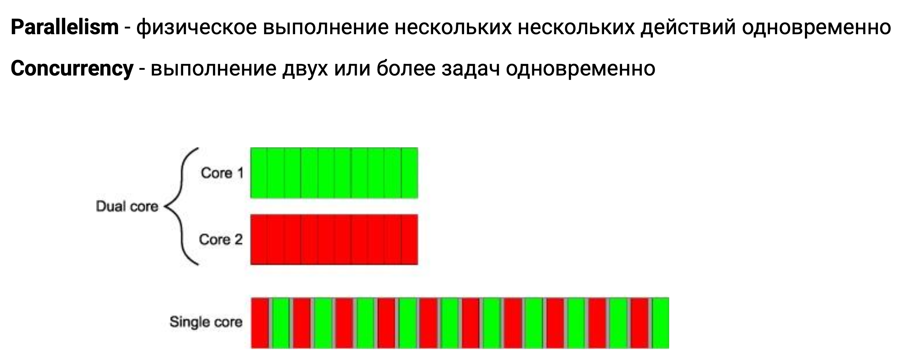
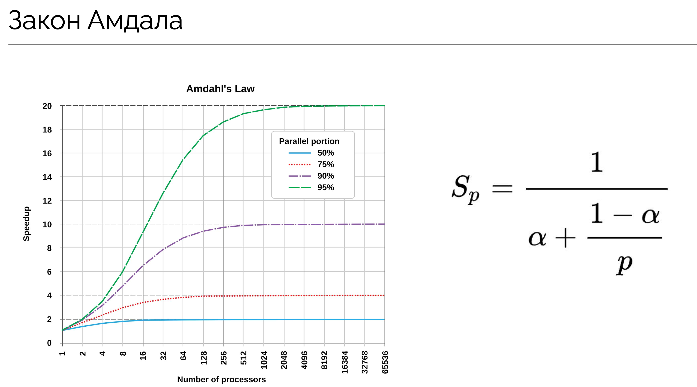
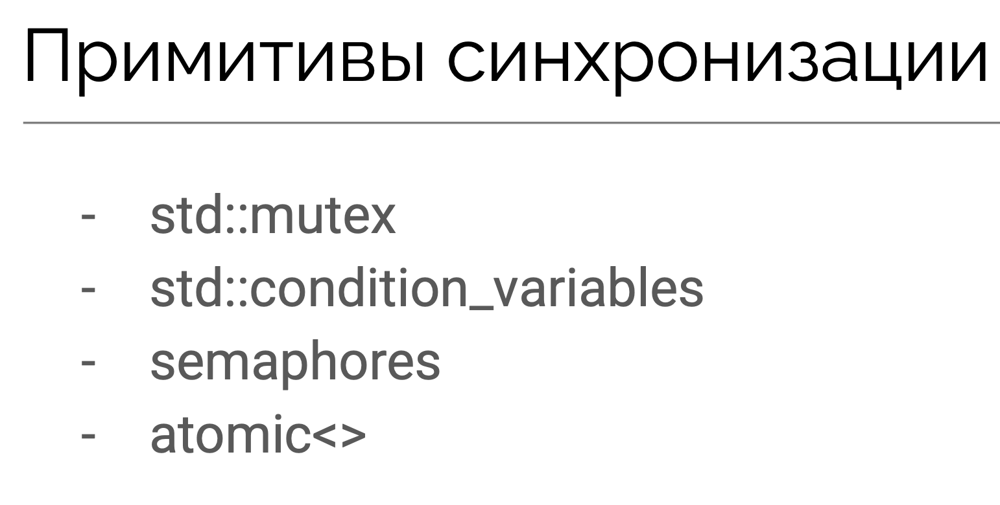
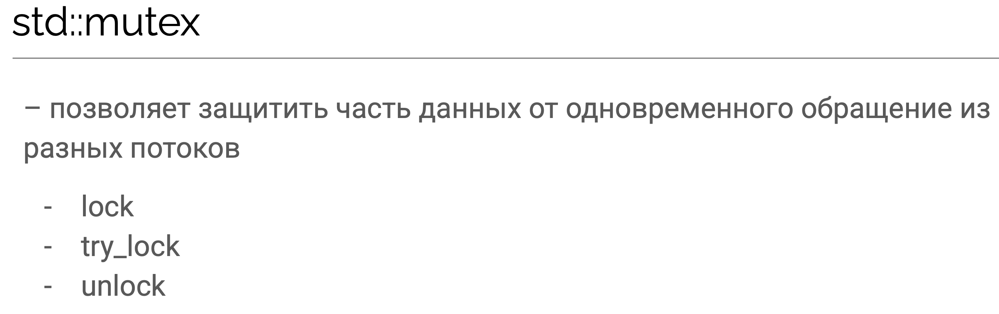
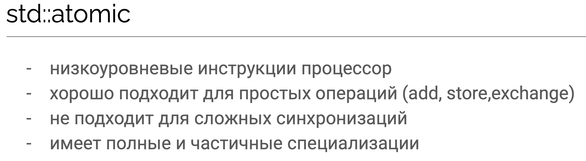
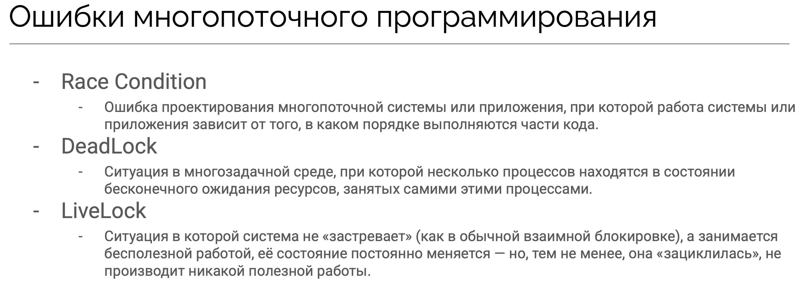

Асинхронность и многопоточность
Конкурентность, параллелизм, mutex, atomic и передача результата.
Асинхронное программирование
Закон Мура — это правило, согласно которому количество транзисторов на компьютерном чипе увеличивается в два яаза примерно каждые два года
Concurrency vs Parallelism
программа может быть параллельная и асинхронная
Concurrency — конкурентное выполнение, при котором несколько задач продвигаются в течение общего интервала времени. Parallelism — параллельное выполнение нескольких действий в один момент времени.

Асинхронная операция позволяет продолжить работу до получения результата. Параллельность описывает одновременное выполнение, асинхронность — способ ожидания и получения результата.
thread.join() ожидает завершения потока.
Горутины (goroutines) это в языке Go — это легковесные потоки, управляемые планировщиком Go (встроено в язык), а не ОС. Они стартуют с 2 КБ стека, позволяя запускать сотни тысяч задач.
Корутины (coroutines) в других языках — это общее понятие сопрограмм (функций, способных приостанавливать выполнение и возвращать управление), которые могут быть как с поддержкой стека (stackful), так и без (stackless).
Join присоединяет Detach - отсоединяет поток
sleep_for приостанавливает поток как минимум на заданный интервал. Фактическое время может быть больше из-за планирования.
По закону Амдала последовательная часть работы ограничивает ускорение при распараллеливании.

Проблемы при многопоточке
Состояние гонки возникает, когда результат зависит от порядка выполнения событий. Гонка данных в C++ возникает при несинхронизированных конфликтующих обращениях к одной области памяти, если хотя бы одно из них записывает данные.
Коммутативность операций не устраняет гонку данных. Обновление разделяемого счётчика требует атомарной операции или синхронизации.



- mutex- позволяет запретить одновременное обращение из разных потоков
- try_lock -> true false если получилось залочить
- lock unlock
- lock_guard - авто лок анлок
- std::atomic - примитив синхронизации с переменными. Хорошо подходит для обычных операций. Атомарное действие- неделимое действие в информатике, которое выполняется либо полностью, либо не выполняется вовсе, гарантируя отсутствие промежуточных состояний Для отдельных атомарных операций блокировка может не требоваться. Для составного инварианта может понадобиться мьютекс. Для одной атомарной операции отдельная блокировка может не требоваться. fetch_add
Ошибки многопоточного программирования

DeadLock - ситуация когда несколько процессов ожидают ресурсы занятные самими этими процессами (цикл в графе ожидания команд) Например 1 взял 1гантелю другой вторую и обоим нужна 2 и они ждут
LiveLock - ситуация в которой система система не застревает (как в обычной блокировке) а занимается бесполезной работой, чтобы не простаивать
condition_variable - переводит поток в состояние ожидания и проверяем доступно или недоступно можно notify уведомить
Std::promise - это объект в котором храним какой-то объект обещания в котором потом будет результат
std::future получает результат или исключение из общего состояния, связанного со std::promise.